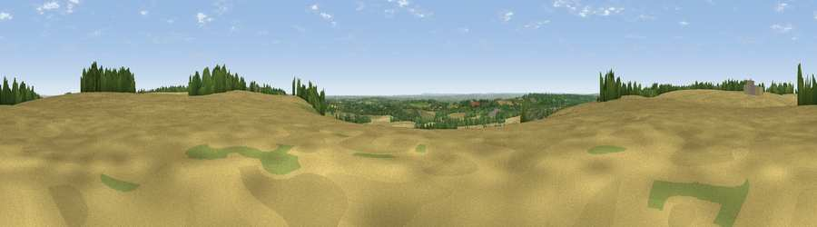

Viewpoint near Lenham
#16374 in England · top 14% of its area beats it · near LenhamWhere it is
The exact computed spot (TQ 91075 52975). Click the marker for map links.
The view, rendered

A 360° render of this exact spot computed from the terrain model, tree cover and land cover — summer colours, afternoon light, calibrated against photographs of famous viewpoints. Real trees, hedges and buildings will differ in detail.
The panorama
Grey silhouette: terrain skyline in each direction (720 bearings, Earth curvature and refraction included). Dashed green: skyline with trees (+15 m) and buildings (+8 m) as obstacles. Blue strip: how far the ground is visible on each bearing.
Where the view opens
Wedge length = distance to the farthest visible ground on that bearing (vegetation-aware). Rings at 10, 25 and 50 km.
What fills the view
71% cropland · 13% woodland · 13% grassland · 2% built-up
Angular shares of the visible panorama (visual magnitude), not map area. Landscape diversity 0.38 (0–1 Shannon).
Key numbers
More beautiful places nearby
The staircase of upgrades: each row has a higher view potential than everything closer. Driving times are estimates from straight-line distance, calibrated against real road routing — check an actual route before setting out.
| Place | Direction | Drive | Score |
|---|---|---|---|
| Viewpoint near Lenham | WNW · 1 km | ~4 min | 56.7 |
| Viewpoint near Harrietsham | WNW · 3 km | ~7 min | 57.3 |
| Viewpoint near Charing | SE · 4 km | ~10 min | 68.6 |
| Viewpoint near Westwell | SE · 9 km | ~17 min | 72.2 |
| Viewpoint near Lympne | SE · 26 km | ~42 min | 72.6 |
| Tolsford Hill | ESE · 29 km | ~45 min | 77.9 |
| Viewpoint near Capel-le-Ferne | ESE · 36 km | ~55 min | 80.2 |
| Viewpoint near Willingdon | SW · 61 km | ~83 min | 83.4 |
51.24394, 0.73619 · source: screening · position refined by local search. Computed location — check access rights before visiting.